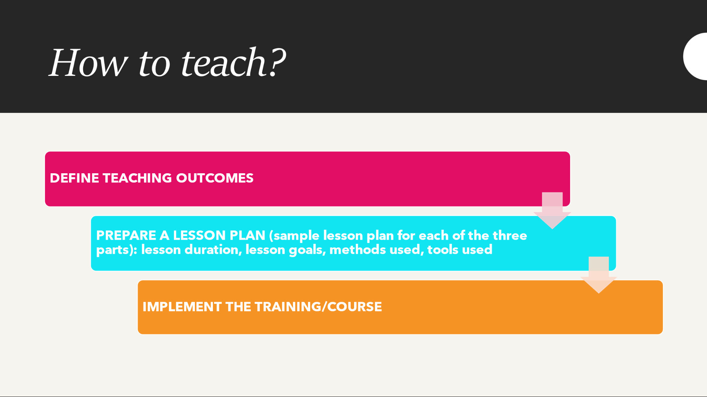

За полазнике
За тренере
За полазнике
За тренере
Модул 18: Опште смернице за тренере
Опис модула
У овом модулу дате су смернице тренерима да осмисле, имплементирају и процене лекције о (Модули 1-17) различитим аспектима новинске писмености. Материјали обухватају 17 различитих тема које су подељене у три тематске целине:
- Део 1: Разумевање медијског окружења, модули 1-8
- Део 2: Медији и новинарство, модули 9-11
- Део 3: Критичко промишљање о вестима, модули 12-17
Теме могу користити искусни едукатори и други професионалци који већ предају новинску писменост, као и они са мање наставног искуства који су заинтересовани за вођење радионица и/или курсева за одрасле ученике о новинској писмености. Материјали за обуку су обимни и разноврсни. Свака тема представља независно поглавље и може се предавати одвојено од других тема. Садржи циљеве, исходе учења и предлоге за обликовање обуке, као и предлоге појединих активности које могу да се имплементирају у процес наставе и учења. У овим Смерницама за тренере:
- предочићемо одређене карактеристике одраслих ученика
- представићемо различите улоге тренера
- описаћемо наставне методе и технике које се могу користити приликом подучавања новинске писмености
- усмераваћемо тренере у припреми наставних сесија тако што ћемо им дати структуру плана часа
Садржај: Опште смернице за тренере
Карактеристике одраслих ученика
Пројекат је усмерен према различитим групама одраслих и има за циљ да унапреди њихову новинску писменост и вештине критичког мишљења. Одрасли ученици уче из бројних разлога и када то раде, обично стичу одређени скуп вештина. Поједини одрасли ученици уче како би завршили образовни програм који су започели, а нису завршили у младости или адолесценцији. Они уче да би били унапређени на послу, да би задржали свој посао или да би уопште добили посао. Уче да би променили каријеру. Уче да би стекли знања која су им потребна у слободно време, у обављању својих хобија, на путовањима. Они уче да би испратили захтеве промена у свакодневном животу које доноси дигитализација друштва, итд.
Колико су различити разлози за учење, толико су и карактеристике ученика. Одрасли ученици се разликују по годинама, полу, степену образовања, социоекономском статусу, статусу запослења, интересовањима, уверењима, менталним способностима, нивоу мотивације за учење, итд. Они имају различите животне улоге: родитељи, запослени, деца, пријатељи, партнери, колеге, грађани. Потребе за новинском писменошћу са 30 година разликују се од потреба за новинском писменошћу са 50 или 65 година и зависе од низа горенаведених фактора. Из ових разлога, разматрање заиста разноврсног спектра потреба одраслих ученика је кључно за сваког тренера који ради са одраслим ученицима.
Према књизи Малколма Кнолса (Malcolm Knowles) “The Modern Practice of Adult Education – from Pedagogy to Andragogy” (Савремена пракса образовања одраслих – од педагогије до андрагогије) одраслим ученицима је потребно самопотврђивање и индивидуално учење. Штавише, одрасли захтевају признање свог статуса. Студије о образовању одраслих истичу искуствену методу у којој они могу најбоље да усвоје знање које се предаје. Одрасли повезују концепте, не тако што памте или уче структуру, већ позивајући се на искуствени контекст. Тако се стварају субјективне идеје, претпоставке и мишљења према наставном плану и програму који могу побољшати наставну методу и садржај који се представља.
Старије особе су активније у процесу учења у којем немају сумње или бриге у вези са својим способностима учења и више су мотивисане и активније у задацима које виде као важне, корисне и смислене у свом свакодневном животу. Стога се избор образовних метода везује за појам учења: учење као само-трансформација, учење као боље разумевање живота, учење као потрага за личним смислом, учење као прикупљање информација за каснију употребу (Radovan, October 2019, slide 6)
Многи тренери очекују од својих полазника да се понашају као “зрели људи”. Када дође до непримереног понашања, оно брзо може постати предмет осуде, па чак и увреде. Проблем је углавном у менталитету тренера (“Они нису деца, они ће то сами прочитати!”), што се даље одражава и на њихов однос према настави. Ефикасан едукатор је свестан да има и улогу едукатора, а не само преносиоца информација (Morano, August 2013, стр. 5).
Способности учења одраслих
У струци је одавно прихваћено да се “способност за учење повећава до 20. године, затим престаје на неколико година и онда опада” (Jelenc, Sabina, 1996, стр. 21). Открића о функционисању мозга ово поричу, иако са годинама долази до погоршања чула (вид, слух), брзине (физички и интелектуални одговор) и физичке снаге (али не и интелектуалне снаге). Способности учења одраслих зависе пре свега од постојаности њихове менталне активности. Здрава одрасла особа која је увек ментално активна може спорије да учи садржај о којем нема искуства, или који се доста разликује од његовог/њеног сопственог искуства, али ће га памтити као и млада особа. Међутим, одрасли памте садржај који одговара њиховом искуству чак и брже од младих. С обзиром на то да су одрасли обично емоционално стабилнији од младих (што им омогућава да се боље фокусирају на садржај) и да су стрпљивији (што им омогућава да буду истрајнији у постизању циљева учења), носиоци обуке не би требало да буду забринути. Ефикасан тренер приликом представљања садржаја омогућава ученицима да га повежу са сопственим искуствима и увиде релевантност за своје животе и рад (Morano, August 2013, стр. 6).
Планирање обуке из новинске писмености

Материјали за обуку припремљени у оквиру овог пројекта су богати и обимни. Који део садржаја обуке тренер треба да користи – све модуле или само одређене? Који су критеријуми за одабир материјала за обуку приликом одржавањa радионице, семинара или дужег курса о новинској писмености?
Приликом одлучивања који садржај користити, припремили смо нека питања за тренера да му/јој помогнемо да донесе одлуке које су у најбољем интересу његових/њених ученика:
- Ко су моји ученици и које су њихове карактеристике (старост, ниво образовања, статус запослења, друштвене прилике, мотивација за учешће у обуци, итд.)?
Савет: Покушајте да прикупите што више информација о својим ученицима како бисте могли адекватно да се припремите. Можете замолити организатора обуке да вам достави одређене податаке, можете припремити кратак онлајн формулар и послати га полазницима пре почетка обуке.
- Које су главне празнине у знању ученика?
Савет: Једноставан начин да проверите постојеће знање ученика је да припремите кратак онлајн формулар за (само)евалуацију о садржају који ћете предавати и прикупити одговоре ученика приликом припремања обуке.
- Колико времена имам на располагању за обуку?
Савет: Будите реални. Уколико се припремате за четворочасовну радионицу, пазите да не одаберете превише садржаја и целокупну обуку посветите предавању. Без обзира на трајање обуке, постарајте се да припремите активности које су релевантне за ученике и које они могу повезати са својим искуством.
- Какав је начин извођења обуке: уживо, онлајн, комбиновани?
Савет: Начин извођења обуке има велики утицај на ток наставе и има своје специфичности. Обавезно прилагодите активности начину обуке. Уколико држите онлајн обуку, размислите о томе како ћете задржати мотивацију, када ћете правити паузе, како ћете осигурати да учесници буду активни (нпр. поделите их у засебне онлајн собе како би радили у групама или паровима). У случају организације тренинга уживо проверите колика је просторија за наставу и коју опрему поседује?
- Како ћу знати да ли су ученици остварили циљеве учења?
Савет: Постоји неколико начина да добијете повратне информације од ученика. Можете припремити кратак формулар за евалуацију, образац за самоевалуацију за ученике, квиз, итд.
Трајање
Трајање обуке треба да буде у складу са потребама ученика, циљевима учења и расположивим временом. Тренери могу да припреме и спроведу различите типове тренинга:
- једнодневна радионица на одређену тему
- семинар
- дужи курс
Тренер и процес учења
Тренери су наставници различитих предмета, библиотекари, едукатори у јавним центрима за образовање одраслих, универзитетима за треће доба, појединци без формалног наставног образовања који воде радионице у невладиним организацијама, итд.
“Опходите се према људима као да су оно што би требало да буду, и помозите им да постану оно шта су способни да буду.”
Јохан Волфганг Гете
Савремени едукатор зна да не може никога било шта научити, већ само му може помоћи да научи. Зато се целокупна лична припрема за образовање заснива на мисији: “Помажем људима да уче и учим док то радим”. Савремени едукатор се не замара са превише градива представљеног у уџбенику и наставном плану и програму, јер зна да ће уз одговарајућу личну припрему и прави начин организације процеса едукације подстаћи ученике да самостално науче одређене делове. Видели смо већ у објашњењу појма “одрасли” да је и одраслима још увек потребан едукатор, јер се процес сазревања одвија током читавог живота. Наравно, ово важи за дуже облике едукације, али и током једнодневних тренинга можемо уочити промену у понашању полазника (Morano, August 2013, стр. 16).
Тренер као преносилац информација
Преношење информација је једна од основних комуникационих вештина која се може користити у кратком објашњењу или појашњењу, као и у дужем предавању. Да бисте ефикасно пренели информације, веома је битно да се придржавате ових принципа (Marentič Požarnik, 2018, стр. 244):
- Јасноћа, разумљивост (истаћи циљ и структуру, тј. увод, суштину, закључак; позвати се на претходно знање и искуство, дати добре примере, користити визуелне материјале)
- Емоционално ангажовање (покажите личну укљученост, сликовито излагање, повезивање са постојећим интересовањима).
- Ментална активација полазника (учење кроз решавање проблема, међупитања за рефлексију).
- Усклађеност између вербалне и невербалне комуникације.
Постављање питања
Постављање питања је једна од основних активности наставника, међутим, питања која се постављају су претежно нижа когнитивна питања која захтевају само репродукцију запамћеног. Питања вишег нивоа захтевају размишљање, упоређивање, анализирање или закључивање. Удео ових питања може се повећати уколико се наставницима скрене пажња на ово.
Битна је и стратегија постављања питања: наставник поставља питање целој групи, чека, затим позива учесника и чека одговор. Време чекања је од највеће важности за квалитет рефлексије и одговора полазника (Marentič Požarnik, 2018, стр. 245).
Ефикасан тренер се фокусира на ученике и резултате, избегава дуга предавања и припрема разноврсне активности. Ако тренер осмисли поруке, поруке ће бити кратке и јасне и полазници ће моћи да их обраде или користе за решавање практичних задатака.
Методологија
Одрасла популација има своје карактеристике учења, а избор образовних метода је веома важан. На одабир метода такође утичу (Radovan, October 2019, slide 4-5):
- Циљеви и садржај избора
- Карактеристике групе која пролази обуку
- Психолошке потребе које се разматрају приликом одабира метода
- Схватањa процеса учења предавача или тутора
Циљеви и садржај треба да буду фокусирани на:
- Таксономију исхода учења (Блумова таксономија)
- Практичнији или апстрактнији садржај
- Мотивациону снагу садржаја
- Који методолошки приступи то омогућавају?

Извор: https://cft.vanderbilt.edu/guides-sub-pages/blooms-taxonomy/, January 2022
Образовне методе које највише одговарају старијим особама су групне и искуствене образовне методе. Оне укључују: метод дискусије, метод решавања проблема, метод учења заснован на пројекту, метод истраживања и друге (Radovan, October 2019, slide 10-11).
Искуствено учење
Термин “искуствено” сугерише да је такво учење фокусирано на искуство. Теорију је развио Давид А. Колб (1984) на основу истраживања Дјуија, Левина и Пијажеа о значају и улози искуства у учењу. Према Колбу, искуствено учење је процес трансформације искуства у знање (Morano, August 2013, стр. 18).
Колбов циклус
Прва фаза се односи на доживљавање или поновно проживљавање искуства, друга на размишљање о искуству, трећа на формирање закључака, а четврта фаза се односи на активан покушај валидације закључака:
- Конкретно (стварно, чулно/сензорно) искуство
- Размишљање о искуству
- Апстрактна (концептуална, ментална) концептуализација (идеја, начин рада, начин дешавања)
- Активно експериментисање
Пример активности:
Корак 1: Ученици читају чланак који је лажна вест, али то не знају. Чланак је преузет из материјала за обуку (конкретно искуство).
Корак 2: Ученици размишљају о свом искуству док читају чланак (рефлективно запажање):
Како сте се осећали док сте читали чланак?
Да ли сматрате да су представљене информације поуздане? Због чега? Зашто не?
Корак 3: Ученици уче о карактеристикама лажних вести на основу чланка (апстрактна концептуализација).
Можете ли да идентифујете било какве знаке да је вест лажна?
Који су то знаци?
Шта можемо научити помоћу њих?
Како можете користити ово знање у будућности?
Корак 4: Ученици испробавају оно што су научили (активно експериментисање). Ученици читају две различите вести: једна је лажна, друга је поуздана. Покушавају да примене стечено знање приликом идентификовања лажне вести.

Извор: https://www.skillshub.com/what-are-kolbs-learning-styles/, January 2022
План рада
Образовање је попут позоришне представе. Редитељ позоришне представе има сценарио како би се побринуо да позоришна представа постигне свој циљ и да тече глатко. Исто важи и за едукатора. Едукатор је уједно и редитељ представе. Посебна одлика ове представе је учешће публике. Ово може довести до изненађења, због чега је план обуке (концепт) изузетно важан. Зашто? Постоје најмање три аргумента о значају плана рада:
- Припрема детаља у оквиру појединачних целина обуке је ефикаснија (план рада омогућава тренеру да цео час има испред себе и да може да се бави детаљима у складу са њиховим значајем за успех лекције).
- Олакшано је извођење обуке (тренер може да прилагоди ток обуке приликом њеног извођења).
Припрема за поновну обуку је краћа и бржа (тренер освежава курс када се обука понавља, можда мало ревидира план обуке у складу са коментарима које је записао или добио након прве едукације и фокусира се на специфичности нове групе).
Сценарио је иницијално само оквиран план извођења обуке. Током личне припреме за обуку, едукатор се непрекидно враћа на овај план, допуњујући га и модификујући га. Коначна верзија сценарија се креира тек непосредно пре почетка обуке. Сценарио садржи редослед којим ће се одвијати различити сегменти обуке, њихов опис, приближно трајање и неопходна помагала. Формат може бити веома једноставан, нпр.:
|
Тема |
Активност тренера |
Активност полазника |
Помоћна средства (помагала) |
Време |
Сегменти сценарија обуке су:
- загревање и међусобно упознавање полазника
- повезивање око заједничких циљева
- активности тренера ради постизања циљева обуке (нпр. кратка интерактивна предавања о одређеним темама, давање инструкција, праћење и надгледање процеса, давање повратних информација, модерирање процеса, итд.)
- активности полазника
- паузе (да би се омогућило полазницима да се неформално састану и размене искуства; да се освеже и задовоље физиолошке потребе; да се тренеру омогући да процени усклађеност тренинга са сценаријом и да одлучи о евентуланим променама у наставку обуке)
- додатно време за решавање непредвиђених проблема
- евалуација
У следећем делу Смерница, биће речи о најмање једној методи и техници за:
- загревање и међусобно упознавање полазника
- повезивање око заједничких циљева
- активности тренера ради постизања циљева обуке
- активности полазника ради постизања циљева
- евалуацију обуке
Наставне методе и технике
Пробијање леда
На почетку обуке учесници имају помешана осећања:
- радозналост,
- очекивања,
- неизвесност,
- срамоту,
- анксиозност, итд.
Појединци траже своје место у оквиру групе и идентификују централне личности групе. Екстровертни учесници једва чекају да проговоре, док интровертни ћуте и само посматрају. Група емитује напету енергију на коју многи тренери реагују са стрепњом.
Успешан тренер је свестан потребе за смањењем напетости, па почиње сусрет са такозваним активностима за загревање. Ове активности омогућавају ученицима да почну да се припремају за ново окружење и нови догађај (Morano, August 2013, стр. 20-21).
Индивидулана метода загревања
Сваки полазник има задатак да нацрта слику себе на послу (или себе у приватном животу) на А4 папиру (још боље на А3 папиру, или чак и на постеру ако то можете да приуштите). Корисно је у погледу времена да тренер претходно покаже свој пример, али уколико желите више креативности, можда би било боље да им дате слободу. Свака особа потом лепи свој цртеж на део зида означен са “Ко смо ми?” (or “Ово смо ми:”) и објашњава у једном минуту (док стоји) шта је желела да покаже сликом. Полазници могу да се смењују приликом излагања, могу да бирају особу која ће причати добацивањем тениске лоптице или неког предмета један другом, тренер може питати “Ко ће први представити шта је нацртао?” а након тога му/јој захвалити.

Одговарајући број учесника: до 10.
Трајање: један минут за цртање и један минут за излагање
Потребно је: по један А4 лист (А3 или чак постер) за сваког учесника, маркер и комад траке (Morano, August 2013, стр. 21).
Загревање у паровима
Учеснике поделите у парове (могу бити комшије; могу бити људи који се не познају; критеријум може бити одговарајућа карта за игру коју свака особа извлачи приликом уласка у просторију). Испричајте и покажите упутство које садржи највише три питања на која свака особа у пару треба да одговори, док друга слуша, јер ће након тога другим учесницима испричати одговоре свог партнера. Уколико се учесници не познају, питања се могу односити на идентификацију посла којим се партнер бави, интересовања, животна искустава, итд. Ако се учесници познају, питања могу бити везана за искуства која се односе на садржај који ће бити обухваћен обуком.

Извор: People Talking Gesturing - Free vector graphic on Pixabay
Одговарајућа величина групе: 8-12 учесника
Трајање: четири минута за дискусију у пару и један минут за свако појединачно излагање.
Потребно је: упутства, сат, звучни уређај (нпр. гонг, звоно) (Morano, August 2013, p 21-22).
Загревање у малим групама
Поделите учеснике у групе од 3 или 4 члана (може према близини: “Вас троје ћете бити тим, вас тројица...” може према налепници у боји коју су добили приликом доласка; може по рођенданима (од 1-31), а затим редом разврстајте подједнак број учесника по групама). Свака група иде до свог постера и од ње се тражи да напише до три ствари које се истичу (могу бити три ствари које их повезују; могу бити одговори на питања, итд.). Затим у свакој групи одаберите особу која ће представити свој постер. Тренер одлучује да ли ће свака група презентовати све одговоре или само један део, у зависности од задатка.

Извор: Meeting Conference General - Free vector graphic on Pixabay
Одговорајућа величина групе: 9-25 учесника (може бити и више учесника, али тада није потребно да презентују све што су написали, а можда није ни потребно да свака група представља – довољно је упознати учеснике који ће такође учествовати касније).
Трајање: максимално три минута за групни задатак и један минут за сваку групу за излагање.
Потребно је: постер и маркер за сваку групу, упутства, сат, звучни уређај (нпр. звоно) (Morano, August 2013, p. 22).
Вежба за тим билдинг и јачање ефикасне комуникације - Кравата од папира
Нацртајте кравату на А4 папиру и исеците је. Напишите три тврдње на кравату, једна од тврдњи је нетачна, а две су тачне. Сваки учесник качи кравату за своју кошуљу или горњи део одеће. Сви учесници или чланови групе шетају просторијом и комуницирају са што више чланова. Главни задатак је да се открије која је од написаних тврдњи тачна, а која нетачна. На крају вежбе дајте свим учесницима прилику да поделе своја осећања и закључке са осталима. Циљ вежбе је углавном упознавање чланова групе, али и јачање вештине слушања.

Индивидуализована метода заједничког дизајна
Прво, сваки учесник заокружује три најзанимљивија циља на својој листи. Потом, за сваки приказани циљ, тренер тражи од полазника да дигну руку они који су га заокружили. На постеру се затим уписује број гласова и заокружују се три циља са највише гласова. Тренер након тога тражи од учесника да маркерима на исеченим листовима папира напишу своје жеље и очекивања која нису била обухваћена циљевима.
Едукатор прикупља попуњене листове и лепи их на део зида означен са “Заинтересовани смо за” (или “ааааа” "Жеље и очекивања:"). За листове који личе, тренер проверава са ауторима да ли заиста мисле слично и одлучује да ли да их групише заједно или да сваки од њих представља своју категорију. Жеље и очекивања које нису у складу са сврхом обуке премешта на друго место и објашњава где, када и како могу да остваре своје жеље.

Трајање: 20 секунди за одабир, минут за гласање, минут за писање жеља и очекивања, 3-5 минута за анализу листова.
Потребни су вам: постер са исписаним циљевима и постер са редним бројевима циљева, маркер, комад А4 папира исечен на три траке за сваког учесника и фломастер за сваког учесника (Morano, August 2013, стр. 22-23).
Заједничко осмишљавање циљева у малим групама или паровима
Прво, сваки учесник заокружује три најзанимљивија циља на својој листи. Вођа групе прави табелу у којој бележи колико су гласова чланови дали сваком циљу. Када вођа групе пријави своје резултате тренеру, тренер их записује на постер и затим заокружује три циља са највећим бројем гласова. Тренер потом тражи од група да се договоре око највише три заједничка очекивања (могу да их напишу на постеру или на исеченим листовима папира, као у индивидуалној методи).
Излагање се врши методом „реч кружи“, при чему свака група говори само једну жељу или очекивање. Када се круг заврши, представљање се понавља онолико пута колико је потребно и онолико рунди колико је неопходно да би тренер могао да све запише. Након што су све жеље и очекивања забележене, тренер заокружује оне које се могу прихватити као циљ на датом тренингу, а осталима указује где, када и како могу да их реализују, или (ако не знају) на који начин ће сазнати за ове информације.

Извор: Confident Businessman Presentation - Free image on Pixabay
Трајање: 1 минут за састављање списка, 1-2 минута за излагање (у зависности од броја група), 2 минута за писање жеља и очекивања, 3-5 минута за записивање жеља и очекивања и њихову анализу.
Потребно је: постер са циљевима (или пројектор и постер са редним бројевима циљева), фломастер (Morano, August 2013, p. 23).
Интерактивно предавање (презентација)
Најважнија ствар у вези са интерактивношћу је подстицање ученика да учествују док примају информације.
Тренер охрабрује ученике:
- да покажу да ли разумеју (проверава да ли ученици прате):
- Коју врсту дезинформација представља пример Инвазија Марсоваца?
- Које су карактеристике мисинформација?
- Зашто је ова вест окарактерисана као дезинформација?
- Која је главна разлика између трола и бота?
- да изразе своје мишљење о представљеним информацијама:
- Зашто људи стварају информацијске поремећаје? Да ли можете да се сетите неких разлога?
- Зашто су друштвене мреже важне за процес настанка информационог загађења?
- Видели смо како менталне пречице, конфузије и илузије подстичу све нас да верујемо у ствари које нису истините. Који когнитивни механизми вас терају да верујете у ствари које нису истините – да ли је то пристрасност потврђивања, мотивисано резоновање, или можда когнитивна дисонанца?
- Које су негативне стране ехо-комора? Постоје ли и неке позитивне стране ?
- да дају примере из сопственог искуства:
- Да ли сте икада сусрели са интернет троловима? Због чега сте помислили да је то била активност тролова?
- Можете ли навести неке позитивне ефекте алгоритама?
- Да ли сте свесни било које ехо-коморе чији сте део?
Подстицање је изузетно важно. Учесници могу да препознају намеру едукатора по тону гласа и говору тела (Morano, August 2013, стр. 24).
Модерирање процеса групног рада
Процеси групног рада током обуке укључују дискусије, излагања, давање и примање повратних информација и евалуацију. Најмоћније средство фацилитатора је широк спектар питања (Morano, August 2013, стр. 24-25).
Питања која проширују начин на који ученици размишљају:
- Хајде да ово сагледамо шире (из друге перспективе). Како ће то утицати на наш рад?
- Ко има другачија искуства?
- Шта би требало да урадимо следеће?
- Шта ви мислите о (предлогу)?
Питања којима треба позитивно одговорити на сугестије, мишљења и ставове учесника који су на први поглед погрешни или нетачни:
- приликом тражења идеја за решавање проблема:
- Ово је једна могућност. Шта је још могуће?
- Хвала вам. Које друге опције постоје?
- Шта ћемо још додати на ову листу? Итд.
- у току дискусије:
- Какве ово везе има са ...?
- Како ово може утицати на ...?
- Како сте дошли до тог закључка? Итд.
Питања чији је циљ постизање заједничког разумевања међу свим учесницима:
- Шта тачно мислите?
- Какве доказе можете дати за ово?
- Шта је разлог због којег ово мислите?
- Како би ово могло да утиче на ваш рад/ситуацију/разумевање?
Праћење и помоћ учесницима у групним активностима
Након давања упутства за активност учесника, тренер се претвара у посматрача. Сврха посматрања је провера разумевања задатка (када посматрамо говор тела, уверавамо се да учесници заиста разумеју шта се од њих очекује) и доношење одлуке о потреби за интервенцијом (пружање помоћи).
Током активности учесника које се одвијају у паровима или малим групама, прво дозволите учесницима да се сами организују и разговарају о сврси задатка. Уколико приметите знаке неизвесности, приђите им и питајте их како им можете помоћи. Едукатор интервенише и у групама које још нису ништа написале на постеру (ово је још један разлог за организовање активности у стојећем положају и писања по постерима) и када примети нејединство унутар групе (једна особа се суздржава, само двоје људи дискутују, итд.). У таквим случајевима, едукатор прилази групи, пита докле су дошли, а затим користи питање да подстакне пасивног учесника да учествује (Morano, August 2013, стр. 26).
Индивидуални метод учења из претходног искуства
Овај метод омогућава учесницима да поново проживе своја искуства и уче из њих, или да своја искуства поделе са другим учесницима како би им омогућили да уче из њихових искустава. Тренер ову активност може спровести у облику дискусије. Питајте групу о њиховом искуству са одређеним проблемом. Међутим, постоји опасност да екстровертни и брзи мислиоци говоре, а да други не добију прилику за то. Директно издвајање појединаца могло би да посрами неке (посебно интровертне учеснике).
Стога, успешан тренер треба прво да омогући свима да укратко размисле о одговору на постављено питање. Тренер може чак припремити радни лист или део странице у брошури за учеснике у ту сврху. Реците: „Размислите о новинском чланку за који нисте били сигурни у погледу његове истинитости. Одвојите један минут да размислите о њему и запишите своје мисли.“ Интровертним учесницима овај минут ће омогућити да обраде бар једно искуство, док ће екстровертне и брзе мислиоце ограничити да изаберу најбоље из гомиле мисли током овог времена.
Други корак је размишљање о наученом. Испод првог поља у материјалу може бити друго поље (празно, без инструкција). После 1 минута, тренер би могао да каже: “Ево још једног поља да запишете шта сте научили из овог искуства. Одвојите 20 секунди и запишите своје увиде”.
TСледећи корак је да изнесете своје искуство. У зависности од дотадашњег искуства са целом групом, тренер одлучује о начину излагања:
- коришћењем технике „реч кружи“ и бележењем предлога на постеру или на белој табли
- коришћењем тениске лоптице или сличне технике за одабир особе која ће презентовати
- модерирањем дискусије у којој се стара да свако допринесе неким предлогом (овде поново записује предлоге на постеру или табли).
Тренер такође може одлучити да допринесе неким својим искуством или искуством друге особе. Одлука зависи од квалитета дотадашњих предлога. Метода се завршава питањем: „Шта можемо научити из сопственог искуства?“. На ово питање може одговорити учесник (сумирањем написаног), одговор се може добити и модерирањем дискусије или организовањем групног рада (групни задатак може бити: 3 запажања).
Погодан број учесника: до 10. Већи број учесника је добродошао, али неће сви моћи да представе своја искуства.
Трајање: 1 минут за размишљање и записивање на папиру, 3-5 минута за излагање и анализу искуства, 3-5 минута за извођење закључака. Укупно 7-11 минута.
Потребан вам је: радни лист за сваког учесника или исечени листови папира, бела табла или постери за писање, фломастер (Morano, August 2013, стр. 27-28).
Групни метод учења из претходног искуства
Овај метод омогућава учесницима да постигну исто што и у индивидуалној методи. Погодан је за веће групе које су подељене у мање групе. У малој групи, сви доприносе и уче једни од других.
Тада свако може да учи из закључака других група. Почетак групне методе може бити попут почетка индивидуалне методе: 1 минут за размишљање и записивање на папиру. Оваква индивидуална припрема омогућава квалитетнији рад у групи.
Након индивидуалне припреме следи групни рад. Постер сесије док учесници стоје су краће и олакшавају фацилитатору да прати рад учесника. У групама, учесници треба да разговарају о својим искуствима, да изаберу оно које је интересантно за друге и да напишу шта су научили из овог искуства. Група која заврши раније може да изабере друго искуство и да напише поуку и за то.
Након три минута, тренер звучним сигналом оглашава завршетак задатка. Групе које још увек нису завршиле добијају уверавање (охрабрење) реченицом: “Довољно је и оно што имате”. Група са најмање налаза (да би имала бар нечим да допринесе) може да почне са излагањем. Наставља се техником “реч кружи”, толико кругова да свака група изнесе све што је записала. У случају временских ограничења, фацилитатор може да одлучи да направи краћу презентацију, при чему свака група представља само један налаз (закључак).
У групној методи, тренер такође може одлучити да дода једно од својих искустава или искустава друге особе. Чак и у овој методи, тренер изводи закључке питањем: "Шта можемо научити из сопственог искуства?" и сам одговара на питање (сумирајући оно што је написано), води дискусију или организује групни рад (групни задатак може бити: 3 запажања).
Погодна величина групе: 9-25 учесника.
Трајање: максимално три минута за групни задатак и један минут за свако групно излагање.
Потребни су вам: постер и маркер за сваку групу, упутства на слајду или на постеру, сат, звучни уређај (триангл, труба, гонг, звоно) (Morano, August 2013, str. 28-29).
Групни метод за учење из нових сазнања (сарадничко учење)
Ова метода омогућава учесницима да раде исто као и у индивидуалној методи и прати сличне смернице као групна метода за искуствено учење.
Сарадничко учење је ефикасно у “зрелој групи” - групи у којој:
- сви појединци су свесни позитивне међузависности свих чланова групе и њихових различитих тимских улога,
- сви чланови групе се смењују на лидерским позицијама,
- правила за равноправну и ефикасну комуникацију се успостављају (договарају) и поштују од стране чланова.
Групи је потребно време да се формира. Током формирања, група напредује од Фазе оријентације, преко Фазе незадовољства и Фазе решавања до Фазе креирања.
Учење кроз посматрање демонстрације
Демонстрација је практичнo показивање, од стране тренера, процеса или активности о којој се дискутује (нпр. како верификовати фотографију помоћу онлајн алата за верификацију и како користити Булове операторе у току претраге). Омогућава учесницима да стекну ново искуство или да га упореде са искуством које су већ имали. Демонстрација постиже своју сврху када учесници сами понове процес или активност. Припремајући се за демонстрацију, тренер поставља питања:
- Шта тачно покушавам да демонстрирам?
- На које фазе могу да поделим процес или активност?
- Како да им пружим конкретно искуство?
- Шта може поћи наопако са демонстрацијом и како то могу да спречим?
- Шта ћу учинити ако демонстрација или било који њен део пође по злу?
- Како ћу знати да је демонстрација постигла циљ?
Након што је демонстрација пажљиво припремљена, тренер припрема инструкције за учеснике, објашњава шта ће се десити, усмерава њихову пажњу на важне тачке и најављује шта ће се десити након демонстрације. Тренер потом припрема за учеснике брифинг након демонстрације, омогућавајући им да раде појединачно или у групама.
Слично, учење гледањем видео-записа и учење слушањем аудио снимка се такође ради, јер тренер познаје садржај снимака и може да припреми све четири фазе Колбовог циклуса у складу са тим (Morano, August 2013, стр. 32).
Учење на основу студије случаја
Студија случаја је прича о нечему посебном, јединственом и интересантном за учење из туђег искуства. То може да буде прича о појединцу, организацији, процесу, програму или чак догађају.
Најважнији део ове методе је добро израђен опис стварног случаја из праксе, али добра студија случаја превазилази једноставан опис случаја. Приликом припреме студије случаја тренер поставља слична питања као и када се припрема за демонстрациони метод, уз додатна:
- Како да привучем пажњу полазника и мотивишем их да пажљиво прочитају текст?
- Шта ће добити читањем?
- Какву ће корист они имати?
- Како да им омогућим да га брзо анализирају?
Неколико савета:
- Случај треба да садржи доказ о истинитости (нпр. увећан снимак екрана чланка који извештава о инциденту).
- Почните тако што ћете описати проблем или питање на које желите да читаоци одговоре, а затим им дајте информације које су им потребне да дођу до сопствених закључака.
- Текст који описује случај не би требало да буде дужи од једне А4 странице са величином фонта 12 пиксела. Дуже студије случаја су погодне за активности које се одвијају током тренинга.
- Иако можете припремити различите студије случаја које појединци, парови или групе затим могу представити другима, ефикасније је да сви учесници раде на истом случају у исто време.
- Текст o случају треба дати сваком учеснику. Људи имају различите способности перцепције, па је важно свима дати прилику да проучавају случај на начин који им одговара. У сарадничком учењу, читање наглас може чак и да одвлачи пажњу другим групама.
- Метода студије случаја може трајати 15-45 минута. Постоји ризик да ће бржи појединци (парови, групе) завршити, а спорији бити далеко од краја. Због тога је важно процес поделити у неколико фаза (упознавање са случајем, размишљање о случају, анализа и апстрактно концептуализовање, тестирање валидности налаза), одредити време за сваку фазу, зауставити процес након сваке фазе (помоћу звучног сигнала) и уравнотежити рад група извештавањем (Morano, August 2013, p 32-33).
Пројектни рад
И самостални и сараднички рад на пројектима дају одличне резултате у образовању одраслих, јер омогућавају одраслима да остваре свој пуни потенцијал. Сараднички рад на пројекту има додатне „споредне“ ефекте, као што су учење сарадње, међуљудске комуникације и управљање пројектима.
Пројектни рад је метод који одузима много времена, тако да се обично користи током или након тренинга. Важне компоненте рада на пројекту укључују (Morano, August 2013, p 34):
- дефинисање сврхе и циљева
- идентификовање ресурса и
- дефинисање средстава за реализацију пројекта
- одређивање рока за завршетак.
Метод дискусије – основна метода у образовању одраслих
Карактеристике методе дискусије су:
- Демократичност односа
- Двосмерна комуникација
- Укљученост учесника
- Могућност да се расправља
Има посебан квалитет јер је знање стечено током дискусије трајније, емоционалније, развија систем вредности и ставове. Метод дискусије не захтева велику припрему од стране тренера, али захтева темељно испитивање групе у смислу основног знања и групних ставова, итд.

Извор: 900+ Free Discussion & Conversation Images (pixabay.com)
Када метода дискусије није успешна?
- Нереална очекивања тренера
- Недостатак сарадње између учесника
- Недостатак основних правила (дискусија)
- Примена у лоше формираној групи (Radovan, October 2019, slide 12-15).
Евалуација
Постоји велики број различитих метода и техника за процену онога што је научено, споменућемо само неке:
- индивидуални приказ наученог
- прављење плаката
- израда пројектног задатка
- тест знања
- квиз
- формулар за самоевалуацију итд.
Извор: Feedback Report Back Balloons - Free image on Pixabay
Уколико имате времена, можете да организујете квиз или сличну игру у виду такмичења између група или појединаца. Задаци могу захтевати знање, брзину одговарања, демонстрацију вештина (Morano, August 2013, стр. 36).
Савети за вођење обуке
На крају, можда ћете бити инспирисани са 5 финалних савета за извођење обуке:
- Нека ваш сесија буде интерактивна. Постављајте питања, одиграјте квиз, дајте учесницима фотографије у облику слагалице, пустите видео и увек тражите од учесника да одговоре. Нека разговарају једни са другима, у групама, натерајте их да пренесу запажања о ономе о чему су разговарали.
- Нека ваш сесија буде динамична. Покушајте да не седите док држите презентацију или радите друге активности обуке. Док држите презентацију, постављајте питања, користите контроверзну изјаву, дајте учесницима времена да застану и размисле, говорите довољно гласно и не гледајте пречесто слајдове, већ своју публику. Користите различите врсте активности да бисте створили динамику. Држати се само презентације можда и није најбоља идеја.
- Учините своју сесију значајном својим учесницима. Позовите учеснике да поделе своја искуства, да размисле о сопственим примерима, да посматрају како активности у оквиру сесија утичу на њихова осећања.
- Будите умерени. Када креирате презентацију, покушајте да не стављате превише текста на слајдове. 5 -/+ 2 информације по слајду би требало да буде довољно. Такође је препоручљиво да укључите фотографије, кратак видео запис, инфографике, табелу, итд.
- Затражите повратне информације: Питајте учеснике шта су добили на тренингу, шта би желели да чују о овој теми када би дошли на другу радионицу. Можете припремити кратак формулар за евалуацију, квиз или једноставно замолити учеснике да напишу своје утиске на самолепљивим папирићима, итд.
Референце
Erasmus+ KA1 Mobilnost osebja v izobraževanju odraslih z naslovom Kakovost v izobraževanju odraslih; Nabor dokumentov, orodij, tehnik, vaj in metod. Firence 6. 12 – 11. 12. 2021
Florea, R. (2014). Teaching Methods in Adult Education. An Appraisal of the Effectiveness of Methods Used in Training Future Teachers. Procedia - Social and Behavioral Sciences, 142, 352–358.
Jelenc, S. (1996). ABC izobraževanja odraslih. Ljubljana, ACS.
Marentič Požarnik, B. (2018). Psihologija učenja in pouka. DZS
Morano, M. (August 2013): Sodobni pristopi, metode in tehnike v izobraževanju odraslih. Ljubljana.
Radovan, M. (October 2019). Temeljne metode izobraževanja starejših. Ljubljana
Rasi, P., Vuojärvi, H., & Ruokamo, H. (2019). Media Literacy Education for All Ages. Journal of Media Literacy Education, 11(2), 1-19.